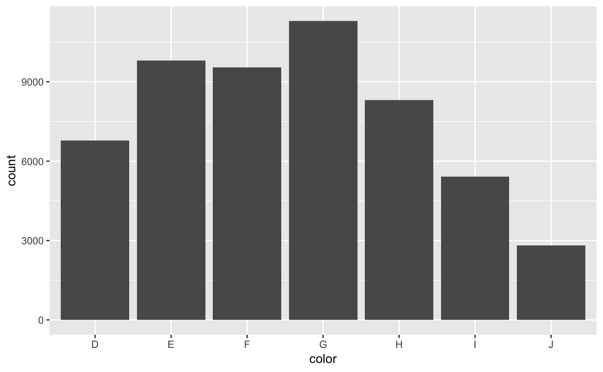
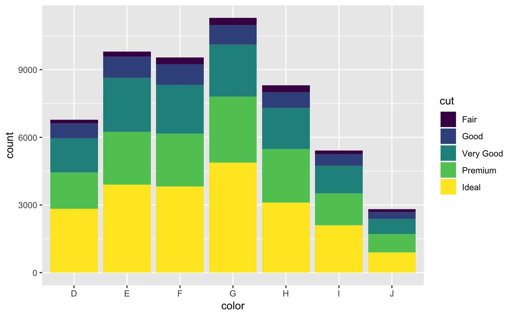
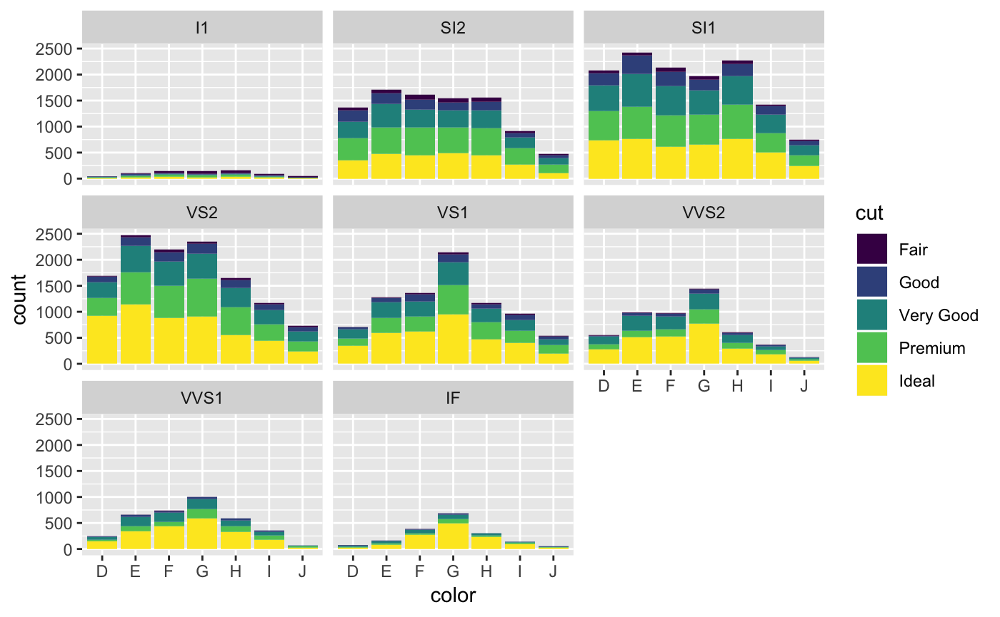

vignettes/basics-of-the-grammar-of-graphics.Rmd
basics-of-the-grammar-of-graphics.RmdThe Grammar of Graphics is built on three components -data, mappings, and geometries. The ggplot2 package incorporates this approach explicitly in creating graphics.
First we’ll load the packages we will need first.
library(tidyverse)
#> ── Attaching packages ────────────────────────────────────────────────────────────── tidyverse 1.2.1 ──
#> ✔ ggplot2 3.1.0 ✔ purrr 0.2.5
#> ✔ tibble 1.4.2 ✔ dplyr 0.7.7
#> ✔ tidyr 0.8.2 ✔ stringr 1.3.1
#> ✔ readr 1.1.1 ✔ forcats 0.3.0
#> ── Conflicts ───────────────────────────────────────────────────────────────── tidyverse_conflicts() ──
#> ✖ dplyr::filter() masks stats::filter()
#> ✖ dplyr::lag() masks stats::lag()Let’s take a built-in dataset, diamonds, and get an understanding what the data look like.
glimpse(diamonds)
#> Observations: 53,940
#> Variables: 10
#> $ carat <dbl> 0.23, 0.21, 0.23, 0.29, 0.31, 0.24, 0.24, 0.26, 0.22, ...
#> $ cut <ord> Ideal, Premium, Good, Premium, Good, Very Good, Very G...
#> $ color <ord> E, E, E, I, J, J, I, H, E, H, J, J, F, J, E, E, I, J, ...
#> $ clarity <ord> SI2, SI1, VS1, VS2, SI2, VVS2, VVS1, SI1, VS2, VS1, SI...
#> $ depth <dbl> 61.5, 59.8, 56.9, 62.4, 63.3, 62.8, 62.3, 61.9, 65.1, ...
#> $ table <dbl> 55, 61, 65, 58, 58, 57, 57, 55, 61, 61, 55, 56, 61, 54...
#> $ price <int> 326, 326, 327, 334, 335, 336, 336, 337, 337, 338, 339,...
#> $ x <dbl> 3.95, 3.89, 4.05, 4.20, 4.34, 3.94, 3.95, 4.07, 3.87, ...
#> $ y <dbl> 3.98, 3.84, 4.07, 4.23, 4.35, 3.96, 3.98, 4.11, 3.78, ...
#> $ z <dbl> 2.43, 2.31, 2.31, 2.63, 2.75, 2.48, 2.47, 2.53, 2.49, ...We can also look at the data dictionary for this dataset using ?diamonds in the Console. The least transparent of the variables are the x, y, and z which in the data dictionary clarify that they refer to the length, width, and depth in mm.
We also see that we have some categorical variables cut and clarity as well as some continuous variables carat and price, for example.
Knowing the informational value of our variables is key to creating an appropriate visualization. In the Grammar of Graphics we are going to take some data, in this case diamonds, then map some variables to a variable space with the aes() function, and then decide how to display these variables in a geometric space with the set of geom_x functions.
Let’s see an example. First we can set up the data.
At this point there is data, but no mappings nor geometries to be represented. Let’s add a mapping of the color variable to the x-axis and plot that as a bar plot.

Since this is a categorical variable, the y-axis is the count. We can augment this graphic by adding a fill aesthetic mapped to the cut variable.

We can also add a third categorical dimension to this plot with a facet. The facet_wrap() function can be added to the graphic represent a new plot for each level of the categorical variable.

To be continued….